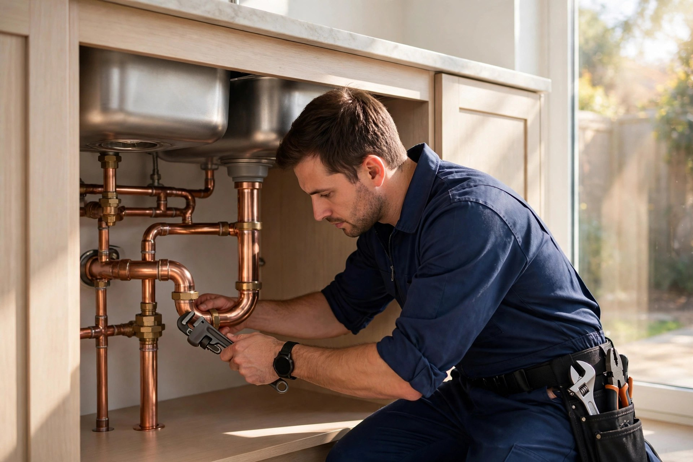
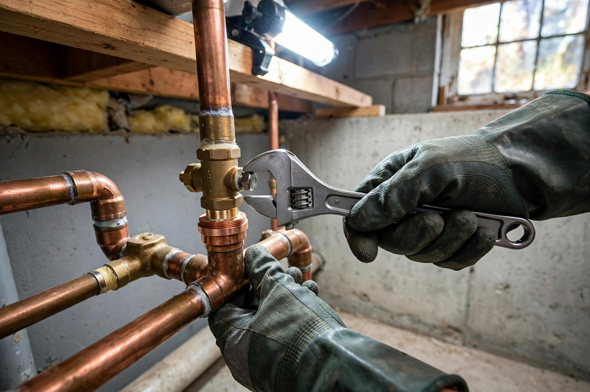
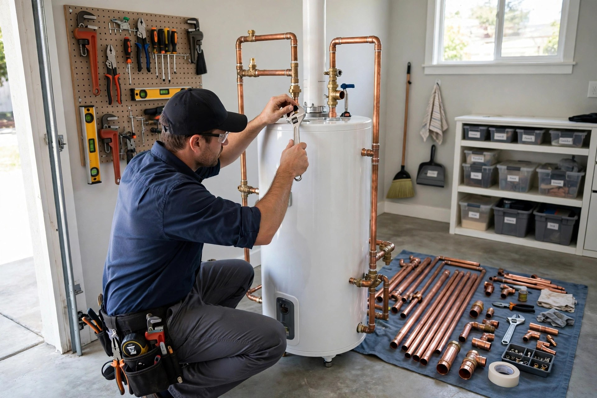
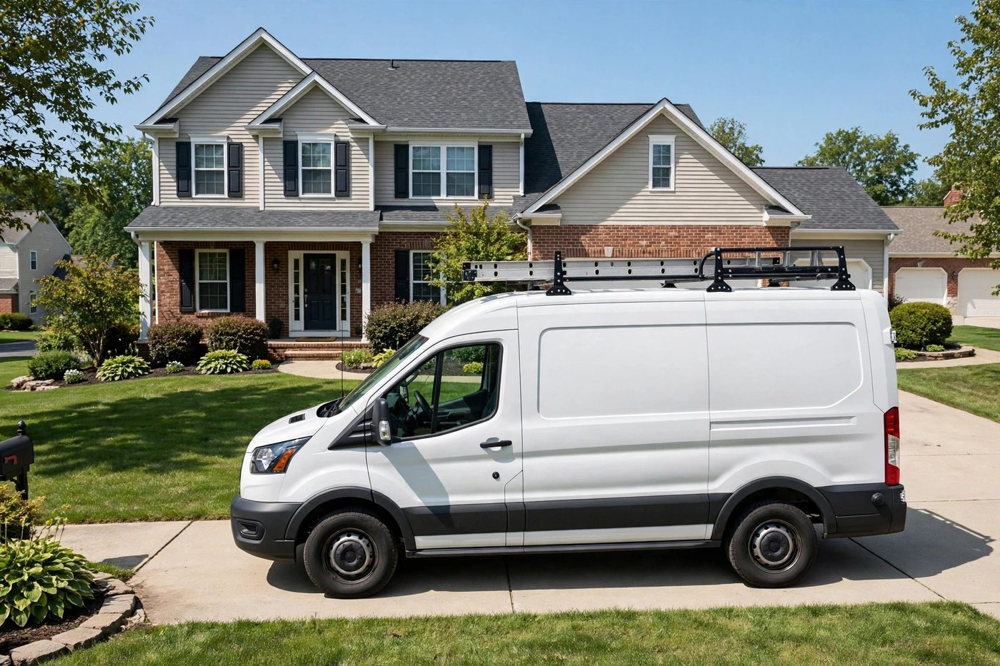

Emergency plumbing
Burst pipes, major leaks, backed-up drains — we respond around the clock, 24/7.

Columbus, Ohio · Family-owned plumbing
Osorio and Son Plumbing — family-owned plumbers in Columbus. Emergency plumbing, pipe repair, drain cleaning and water heaters. Rated 5.0 out of 5 on Birdeye.
What we do
Burst pipes, major leaks, backed-up drains — we respond around the clock, 24/7.
Leak detection and pipe repair done cleanly, with lasting materials and careful workmanship.
Clogged drains and slow pipes cleared thoroughly so the problem stays solved.
Water heater installs, replacements and repairs — hot water back fast and running right.
Repairs, installs and maintenance for your home — kitchens, bathrooms and everything between.
Dependable plumbing service for businesses — keeping your operation running with minimal downtime.

Why choose us
We keep it simple: honest diagnosis, clear pricing up front, and work we stand behind. When plumbing goes wrong, you want people who show up and get it fixed right.
On the job


Customer reviews
Good to know
Yes — plumbing emergencies don't keep office hours, and neither do we. Call (832) 486-7542 any time, day or night.
Yes. We handle residential plumbing — kitchens, bathrooms, water heaters — and commercial plumbing for local businesses.
We're based at 1109 S Hampton Rd, Columbus, OH 43227 and serve Columbus and the surrounding area.
Call (832) 486-7542 — tell us what's going on and we'll give you a clear price before any work starts.
Get in touch